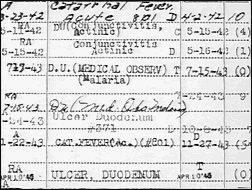

CHAPTER
FIVE
His Miraculous Recovery
Scientology accounts claim that Hubbard, having served
in all five theaters of World War II, and received between twenty-one and twenty-seven
medals and palms, was taken crippled and blinded to Oak Knoll Naval Hospital. Hubbard's
service record presents a different picture: A man who never saw action against the enemy,
and received not twenty-one, but four awards, none for combat or wounds.
The Scientologists frequently reissue a Hubbard
article called My Philosophy, which reads in part:
Blinded with injured optic nerves, and lame
with physical injuries to hip and back, at the end of World War II, I faced an almost
non-existent future. My service record states: "This officer has no neurotic or
psychotic tendencies of any kind whatsoever," but it also states "permanently
disabled physically."
And so there came a further blow - I was
abandoned by family and friends as a supposedly hopeless cripple and a probable burden
upon them for the rest of my days. Yet I worked my way back to fitness and strength in
less than two years, using only what I knew about Man and his relationship to the
universe. I had no one to help me; what I had to know I had to find out. And it's quite a
trick studying when you cannot see.
I became used to being told it was all
impossible, that there was no way, no hope. Yet I came to see again and walk again.
This moving history was designated "Broad Public
Issue" by Hubbard, so it is well known to all Scientologists. It is a remarkable
story, reinforced by biographical sketches published by his Church. To the Scientologist,
Hubbard's miraculous recovery gives hope for his or her own.
Hubbard's My Philosophy is not one of the
biographical statements containing "errors made by former public relations people who
have since been removed," as a high-ranking Scientology official put it, in 1986. 1 There is no doubt that
it was written by Hubbard, as the original is in his handwriting, and was admitted into
evidence in the Armstrong case.
Documents from Navy and Veterans Administration files
tell a very different and far less stirring tale of Hubbard's war wounds. Hubbard did not
spend a full year in Oak Knoll Hospital. He was hospitalized for tests in April 1945, took
a month's convalescent leave from the end of July, and was again hospitalized (though
spent some time as an outpatient) from the end of August until he was mustered out of the
Navy on December 6, 1945. In October 1945, a Naval Board gave the opinion that Hubbard was
"considered physically qualified to perform duty ashore, preferably within the
continental United States." The restriction to duty ashore was due to his chronic
ulcer.
The official files give a fairly complete record of
Hubbard's medical condition from 1941 well into the 1950s. He was first hospitalized in
Vallejo, California, in March 1942, immediately upon his return from Australia. There is
no mention there, or anywhere in the extensive records, of "injured optic
nerves," or of blindness.
When Hubbard was admitted to Oak Knoll hospital, in
1945, he had 20/20 vision, with glasses. When he was mustered out, that December, his
eyesight was 12/20 in the right eye, and 14/20 in the left, again with glasses. The major
deterioration coincided with his decision to apply for a disability pension. In a
plaintive letter to the Veterans Administration, Hubbard claimed that reading for longer
than a few minutes gave him a headache. Following his accidental attack on one of the
Coronados Islands, in June 1943, Hubbard was hospitalized for "stomach trouble,"
which was diagnosed as a duodenal ulcer.
 In January 1945, he
suffered from arthritis, which he attributed to a climatic change from the tropics to
winter in New York. Hubbard had in fact just served for almost a year in Oregon and
northern Califomia. He was hospitalized in April 1945, for a recurrence of the duodenal
ulcer. The official files (right) support these statements, which were also given
by Hubbard to a Veterans Administration doctor in Los Angeles on September 19, 1946, and
to the press in 1950. 2 Neither Hubbard nor the examining doctor made any mention of
war wounds.
At the time of his separation from the Navy, Hubbard
applied to the Veterans Administration for disability benefits. In February 1946, he was
awarded a ten percent disability pension of $11.50 per month. His visual deterioration was
not considered pensionable. For several years he campaigned, with some success, to have
his pension increased. Despite his enormous income in later years, Hubbard continued to
draw the pension until his death.
Claims relating to Hubbard's miraculous recovery from
his war wounds have been many and various: "Thanks in great part to the unusual
discoveries that L. Ron Hubbard made while at Oak Knoll in 1944, he recovered so fully
that he was reclassified for full combat duty." "By 1947, overworked and in
poverty, he found he had the glimmerings of a workable process." "By 1947 he had
recovered fully." "In 1949 Hubbard had had the processes applied to him to the
extent that he could again see and sit at a typewriter. He became better physically until
he passed a full combat physical - and lost his naval retirement." 3
In an interview given shortly after the creation of
Dianetics, Hubbard was more candid about his war wounds. The December 5, 1950, issue of
Look magazine quoted him as saying he had been suffering from "ulcers,
conjunctivitis, deteriorating eyesight, bursitis and something wrong with my feet."
This description fits very well with Hubbard's Navy and Veterans Administration records.
There are further contradictions in Hubbard's
published Scientological works. At least twice Hubbard referred to an incident shortly
before the end of the war, when, according to his other statements, he was supposedly
incapacitated by his wounds. The first reference was made in a tape recorded lecture,
given on July 23, 1951; the second in a bulletin published on November 15, 1957. 4 In both Hubbard claimed that he was on leave in Hollywood on
July 25, 1945, when he was attacked by three petty officers, one with a broken bottle.
Because of his knowledge of Judo, Hubbard was able to fight them off. An impossible feat
for a blind cripple.
At the very time that he was supposed to have
"recovered fully," in October 1947, Hubbard wrote to the Veterans
Administration. In the letter, he claimed that after two years he was still unbalanced
because of his wartime service. He was suffering from prolonged bouts of depression and
frequently thought of taking his own life. He asked for psychiatric treatment.
Hubbard was examined again in December 1947, and a few
dollars were added to his pension for the arthritic condition of his right hip, spine and
ankles. Hubbard said he had sprained his left knee in the service, but the doctor did not
allow this. His award was raised to a forty percent disability, which in 1947 amounted to
$55.20 per month. In 1948, he applied for a Navy disability retirement, which at the time
would have amounted to $181 per month, tax-free. His disabilities were not sufficient for
such a retirement. Far from being "permanently disabled physically," Hubbard was
twice refused a physical disability retirement from the Navy Reserve.
In his book Dianetics: The Modern Science of
Mental Health, published in May 1950, Hubbard made many claims for the curative
powers of his new therapy. They are very revealing in the light of the Veterans
Administration documents. Dianetics would supposedly cure or alleviate arthritis,
bursitis, poor eyesight, ulcers, and even the common cold. Hubbard suffered from all of
these, and fifteen months after announcing his miracle cure to the world, he still
privately claimed to be disabled and continued to collect his Veterans pension. On August
1, 1951, he was examined again. He said he had been suffering from stomach trouble since
1943. The examining physician noted:
He states that he spent approximately
thirteen months in hospitals during his navy service, and that a duodenal ulcer was
demonstrated by x-ray on several occasions .... He says that he has been forced to follow
a modified ulcer diet continuously since his initial gastrointestinal disturbance in 1943.
The spring and the fall of the year are the most troublesome times for him, and he states
that he has exacerbations lasting usually about a week with rather severe distress during
these months .... The patient states that he invariably has trouble with his stomach when
he is working long hours and under nervous stress. He is a poor sleeper, and states that
he has been unable to take the usual soporifics because they seem to upset his stomach. He
smokes very little, and then only intermittently. He believes that smoking definitely
aggravates his epigastric distress.
Under the heading "Impression," the doctor
wrote: "duodenal ulcer, chronic." Under the heading "Diagnosis," he
wrote: "Duodenal ulcer, not found on this examination."
This was one of two specialist examinations performed
on Hubbard that day in 1951. The second was orthopedic. In that report, it is noted:
He also gives a history of injuring his right
shoulder, just how is not clear, and of developing numerous other things including
duodenal ulcer, actinic conjunctivitis, and a highly nervous state. He has applied for
retirement from the navy [from the Reserve list] which was eventually turned down .... He
is a writer by profession and states he has some income from previous writing that helps
take care of him .... This is a well nourished and muscled white adult who does not appear
chronically ill ....
He has a history of some injury to the right
shoulder and will not elevate the arm above the shoulder level. However, on persuasion, it
was determined at this time that the shoulder is freely movable and unrestricted. It is
noted that he has had a previous diagnosis of BURSITIS WITH CALCIFICATION. X-rays will be
repeated. It is not believed that this is of significant incapacity .... Records show a
diagnosis of MULTIPLE ARTHRITIS. However, no clinical evidence of arthritis is found at
this time.
Hubbard's Sea Org "Medical Officer," Kima
Douglas, testified in court that while she attended him from 1975 to 1980, he suffered
from arthritis, bursitis and coronary trouble, which Dianetics was also supposed to
alleviate. 5 Hubbard wore glasses throughout his adult life, but only in
private.
During the Armstrong case, a Hubbard letter to the
Veterans Administration, dated April 2, 1958, was produced. Gerald Armstrong had this to
say of it:
In my mind there was a conflict between the
fact that here he is asking to have his V.A. [Veterans Administration] checks sent to a
particular address in 1958, and in all the publications about Mr. Hubbard he had claimed
that he had been given a perfect score, perfect mental and physical score by 1950, and by
1947 had completely cured himself, and here he is still drawing a V.A. check for this
disability. ... It seems like there is at least a contradiction and possibly an unethical
practice on his part.
During the case, a document was read into the record
which clearly shows Hubbard's state of mind during the period when he was supposedly
developing his science of mind. It is part of a collection of documents which Armstrong
dubbed "The Affirmations," because they are a series of positive suggestions
which Hubbard was instilling into himself through self-hypnosis. In "The
Affirmations" Hubbard attributed each of his physical difficulties to some evasion on
his part. His eyesight was poor because he had wanted to avoid school. His ulcer was an
excuse to avoid discipline in the Navy. He admitted that he had never really had any
trouble with his hip. He added, however, that through hypnotic command he would be able to
convincingly pretend any of these and several other disabilities to obtain a pension, but
would return to health an hour after any examination, amused by the stupidity of his
examiners. He also commented that his lies would have no effect upon his true condition. 6
FOOTNOTES
Additional sources: Hubbard
naval record; Hubbard Veterans Administration file; Flag Divisional Directive 69RA,
""Facts About L. Ron Hubbard Things You Should Know," 8 March 1974, revised
7 April 1974.
1. Ken Hoden, LA Weekly,
4 April 1986.
2. Look magazine, 5
December 1950.
3. Hubbard, Mission into
Time; Hubbard, Self Analysis; Hubbard, All About Radiation
4. Research &
Discovery Series, vol. 6, p.409;Technical Bulletins of Dianetics &
Scientology, vol. 3, p.146
5. Kima Douglas in vol. 25,
p. 4459 of transcript of Church of Scientology of California vs. Gerald Armstrong,
Superior Court for the County of Los Angeles, case no. C 420153.
6. Vol. 12, pp. 1925-7 of
transcript of Church of Scientology of California vs. Gerald Armstrong, Superior
Court for the County of Los Angeles, case no. C 420153. |